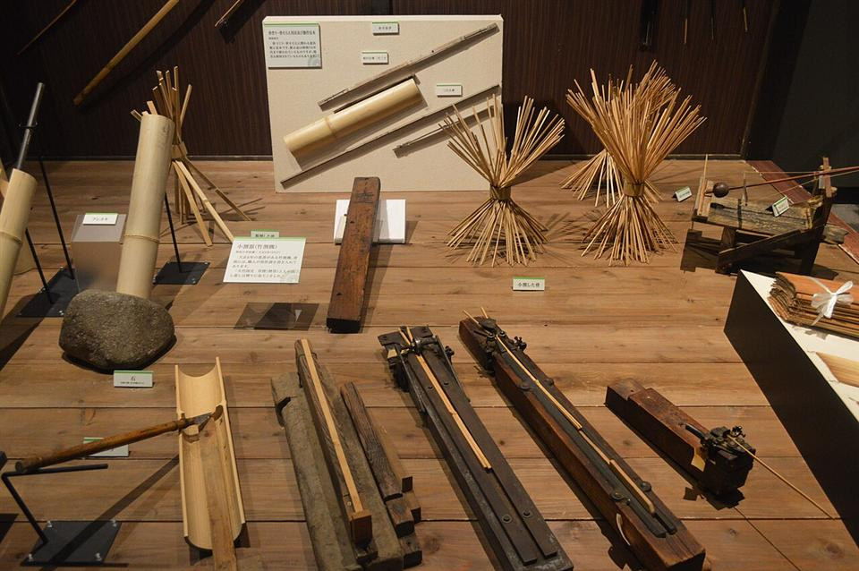

300,000 → 50,000Craftspeople: over 300,000 in the early 1970s, fewer than 50,000 in 2021 (FCCJ, 2021)
1/5Craft sales compared with their peak in 1975 (National Geographic, 2025)
1/3Number of artisans compared with the past (National Geographic, 2025)
30 tonsLacquer sap made in 2019, down from about 2,000 tons a year before 1850 (FCCJ, 2021)
Effects on people and communities
When fewer people buy crafts, artisans lose income. In a 2020 survey by a company called aeru, about half of those who replied said their April sales had fallen by more than half. About 40% feared closing by the end of 2020. (Zenbird, 2021)
Craft towns can lose jobs and visitors too. But support works: since a craft hotel opened in Inami in 2016, young business owners have moved into empty buildings. (National Geographic, 2025)
Effects on traditions and culture
Crafts carry history. Washi paper has been used in Japanese homes for over 1,300 years. (GO TOKYO, 2023)
Skills take a long time to learn. Apprentices at one Tokyo bonsai museum study for six years. (GO TOKYO, 2023) If nobody learns, the knowledge can disappear when older makers stop working.
Facts and statistics
- Kurume kasuri workshops: about 1,500 in the 1930s, about 20 today. (National Geographic, 2025)
- Urushi lacquerware: by 2019, Japan made only 1.5% of the lacquer it made in the 1800s. (FCCJ, 2021)
- Gifu wagasa: fewer than ten umbrella makers are left in Gifu. (Kogei Japan, n.d.)
- Miyako jōfu: an experienced weaver finishes about 20 cm a day. (Kogei Japan, n.d.)

Sources
- A matter of survival, FCCJ (Foreign Correspondents’ Club of Japan), 2021
- Traditional Japanese crafts are at risk. Here’s how travelers can help, National Geographic, 2025
- Upholding Japan’s artisan traditions in the face of economic decline, Zenbird, 2021
- Support Tradition Through Japanese Crafts, GO TOKYO, 2023
- Gifu Japanese Umbrellas, Kogei Japan, n.d.
- Miyako Ramie Textiles, Kogei Japan, n.d.